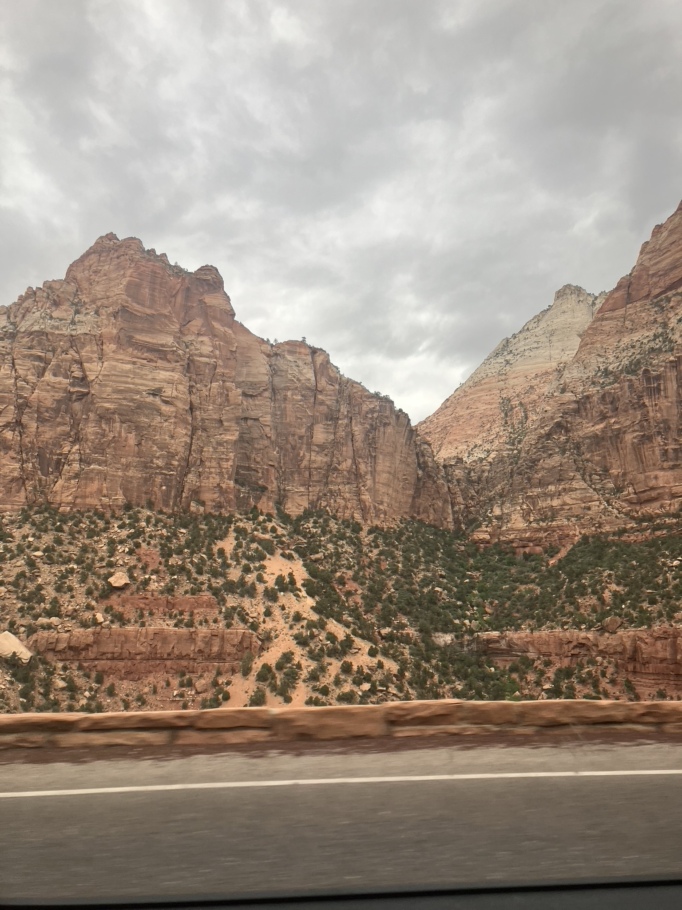
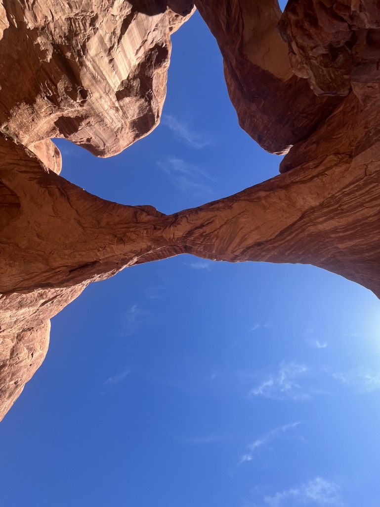
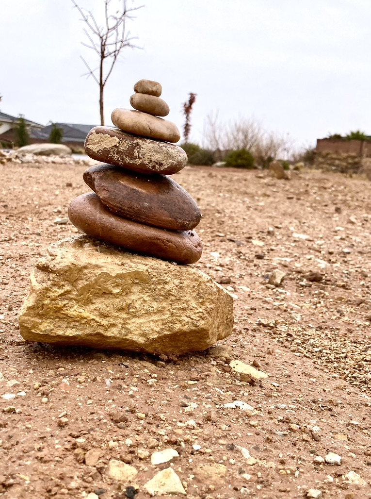
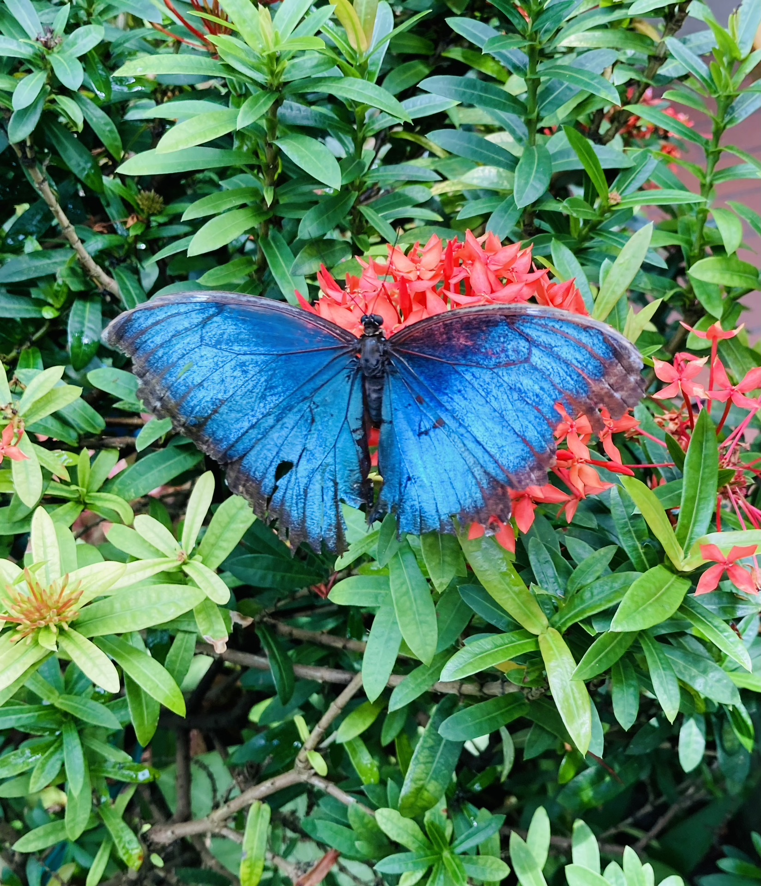
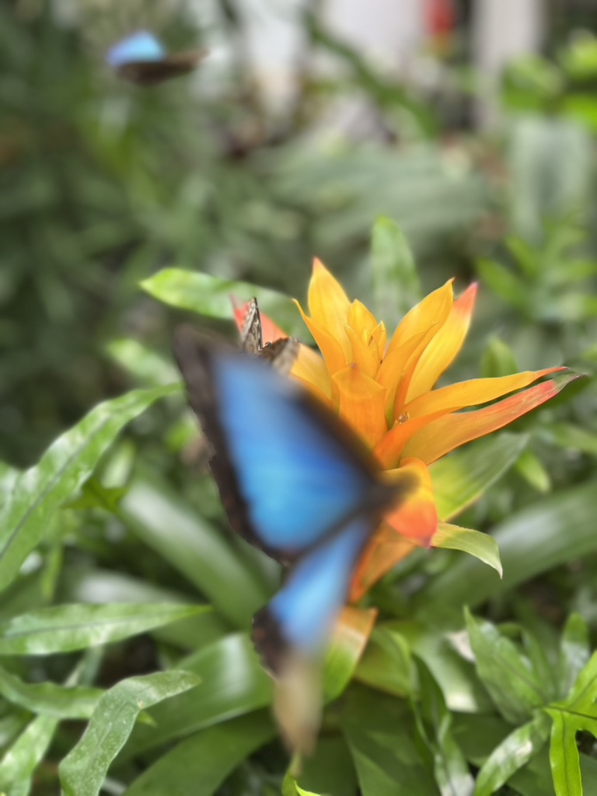

Nature
Nature
Nature photography is one of my favorite ways to slow down and really pay attention to the world around me. It’s not just about taking pictures of landscapes or wildlife—it’s about noticing the small, quiet details that are easy to miss. The way light hits a mountain at sunrise, how a flower opens after rain, or the movement of wind through trees all feel like moments worth remembering. Nature can be so big, but there is beauty in the vastness of it all. Every detail of the world has a story to tell. Every detail was handcrafted by a loving God in heaven.

Feels like a Road Trip - I took this photo on a long drive through Zion National Park. It reminds me of looking out the car window and taking a moment to appreciate the beauty of life.

The Underside of Rock - Do you ever just look at the world and think about how insignificant you are?

This is the Way - The rocks set up on the trail are almost encouraging, like someone put them there just to tell you you're on the right track.

Delicate Beauty - The color and detail on butterfly wings remind us that there is elegance even in the smallest things.

Suspended in mid-flight, the butterfly becomes a streak of sapphire against the air, a delicate reminder that beauty often moves too quickly to hold.